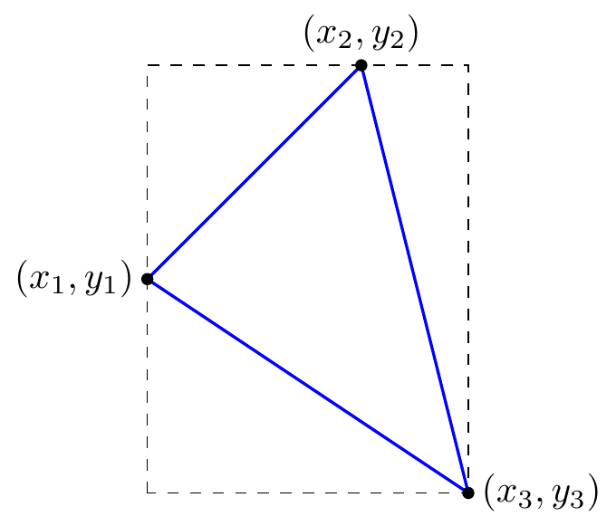

1.5 Les systèmes d’équations linéaires homogènes
Les systèmes d’équations linéaires homogènes sont une classe particulière de systèmes d’équations linéaires. Ceux-ci ont la particularité de toujours posséder au moins une solution. Il est impossible qu’un tel système ne possède aucune solution.
Définition 1.11 (Un système d’équations linéaires homogène) Un système d’équations linéaires homogène de \(m\) équations et \(n\) variables (ou inconnues) \(x_1\), \(x_2\), … et \(x_n\) est un ensemble de \(m\) équations linéaires de la forme:
\[\begin{align*}
\begin{array}{cccccccccc}
&a_{1,1}x_1&+&a_{1,2}x_2&+&\ldots &+&a_{1,n}x_n&=&0 \\
&a_{2,1}x_1&+&a_{2,2}x_2&+&\ldots &+&a_{2,n}x_n&=&0 \\
&&&&&&&&\vdots & \\
&a_{m,1}x_1&+&a_{m,2}x_2&+&\ldots &+&a_{m,n}x_n&=&0
\end{array}
\end{align*}\]
La matrice augmentée d’un tel système est:
\[\begin{align*}
\left[\begin{array}{cccc|c}
a_{1,1}&a_{1,2}&\ldots &a_{1,n}&0 \\
a_{2,1}&a_{2,2}&\ldots &a_{2,n}&0 \\
\vdots &\vdots &&\vdots & \vdots \\
a_{m,1}&a_{m,2}&\ldots &a_{m,n}&0
\end{array}\right]
\end{align*}\]
Un système d’équations linéaires homogène possède toujours une solution. En effet, la solution triviale \(x_1=x_2=\ldots=x_n=0\) forme toujours une solution d’un système. Puisqu’il est impossible que le système ne possède aucune solution, il possède soit une solution unique (la solution triviale) soit une infinité de solutions.
Exemple 1.13 Déterminez les valeurs de \(a\), \(b\), \(c\) et \(d\) qui équilibrent l’équation chimique suivante:
\[\begin{align*}
aC_2H_6+bO_2 \rightarrow cCO_2+dH_2O
\end{align*}\]
1.5.1 Des applications
Exemple 1.14 La loi des leviers d’Archimède stipule que deux masses sont en équilibre sur une balance si leurs poids sont inversement proportionnels à leur distance par rapport au point d’appui. En d’autres mots, pour que deux masses \(m_1\) et \(m_2\) situées respectivement à des distances \(d_1\) et \(d_2\) du point d’appui soient en équilibre, il faut que:
\[\begin{align*}
m_1d_1 &= m_2d_2
\end{align*}\]
Trouvez les masses \(m_1\), \(m_2\), \(m_3\) et \(m_4\) pour que le système suivant soit en équilibre.

Figure 1.5: La loi des leviers d’Archimède.